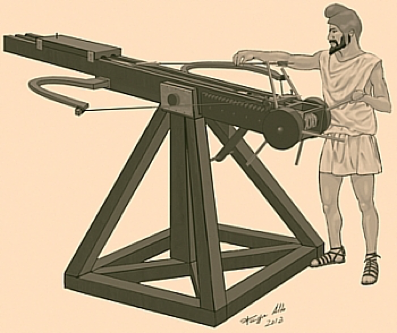
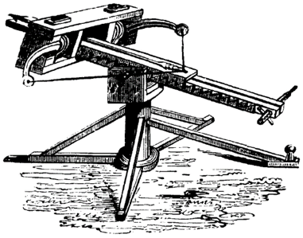
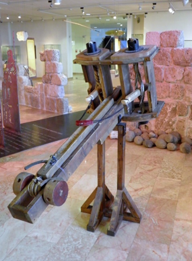
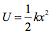
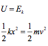
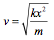
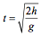
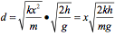

Thought to have been invented for Dionysius I of Syracuse in 399, an early form of the ballista was the gastraphete (meaning 'belly-bow'). This was a large sideways mounted bow similar to a crossbow.
This was designed to increase the projectile range to greater than that of a standard crossbow. The weapon was powered by a composite bow which would be cocked by resting the stomach in a concavity at the rear of the stock and pressing down with your body weight. This meant that a lot more energy could be stored up than by using a handbow.
Fig 1: A gastraphete.
As this idea was refined, ballistae were born. These too were invented by the Greeks, with the idea being taken later by the Romans and modified. It had two wooden arms attached to a piece of rope. It looked similar to a bow laid on its side with a middle section cut out.
Fig 2: A ballista.
The rope could be made from human hair or animal sinew. The rope was attached to a winch and pulled back, bending the arm. The greatest advantage of ballistae was their accuracy, by far superior to the handbow. However, it lacked the strength and henceforth effectiveness of its successors, the mangonel and trebuchet.
Fig 3: A modern reconstruction of a small ballista.
This weapon worked on the principle of storing potential energy (in the tension of the rope) and converting it to kinetic energy as the projectile was released. The potential energy, U stored in the spring is given by:
where k is the elastic constant, which will vary in different models' ropes and arms. For this mathematical model, we will for simplification ignore any friction of the components in the ballista and air resistance when the projectile is in flight. We are therefore assuming all potential energy to be converted to kinetic energy, Ek, as in:
where m and v are the mass and velocity of the projectile respectively. This means that, if we know the elastic constant, k of the device, the velocity of the projectile can simply be calculated by:
Now we know the velocity, the range of the projectile can also be found. Since the bow is fired horizontally, there is no need to resolve components. The range is found by the simple relation, distance d is equal to velocity v multiplied by the time of flight t, d=vt.
From our knowledge of the SUVAT equations, the time of flight will be given by:
So the range, d is given by:
where x is the distance the rope is stretched, k is its elastic constant, m is the mass of the projectile and g is the acceleration of freefall.